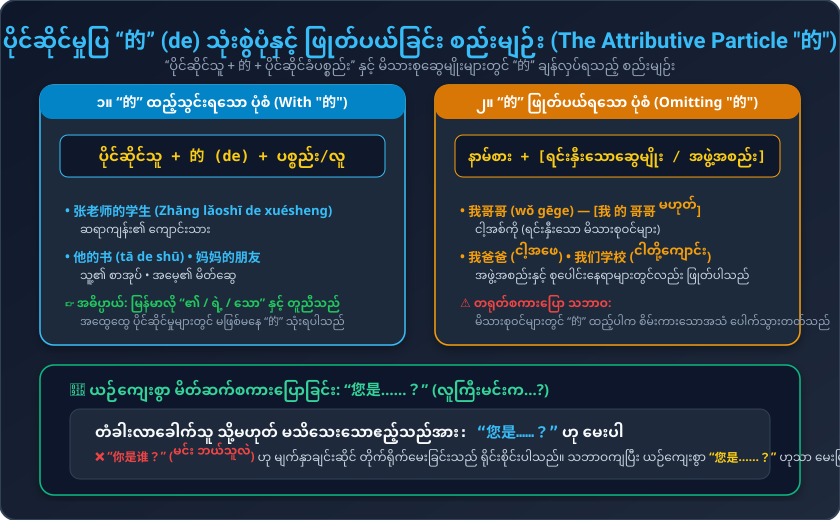

မိတ်ဆက်ပေးခြင်း (Introductions)၊ ပိုင်ဆိုင်မှုပြ "的" သုံးစွဲပုံနှင့် ဖြုတ်ပယ်ခြင်း၊ နေရာပြကြိယာများ (去/在/回)၊ "一下儿" သဒ္ဒါသုံးစွဲပုံနှင့် ယဉ်ကျေးသော အမေးများ
သူတစ်ပါးအား မိတ်ဆက်ပေးခြင်း၊ သွားလိုသည့်နေရာမေးခြင်းနှင့် ဧည့်ခံခြင်း အသုံးများ
လမ်းတွင်ဆုံ၍ မိတ်ဆက်ပေးခြင်း နှင့် ဆရာ့အိမ်သို့ သွားရောက်လည်ပတ်ခြင်း
မြန်မာလို “၏ / ရဲ့” နှင့် တူညီသော “的” ကို မည်သည့်အချိန်တွင် သုံး၍ မည်သည့်အခါ ချန်လှပ်ရမည်နည်း

ယေဘုယျ ပိုင်ဆိုင်မှုများတွင် နာမ်စား သို့မဟုတ် နာမ်နောက်တွင် 的 ထည့်ပါသည်: • 张老师的学生 (ဆရာကျန်း၏ ကျောင်းသား) • 他的书 (သူ့ရဲ့စာအုပ်) • 妈妈的朋友 (အမေ့ရဲ့မိတ်ဆွေ)
မိသားစုဆွေမျိုးများနှင့် အဖွဲ့အစည်းများတွင် “的” ကို ဖြုတ်ပယ်ရပါသည် (ထည့်ပါက စိမ်းကားသောအသံ ပေါက်သွားသည်): • 我哥哥 (ငါ့အစ်ကို - 我 的 哥哥 မဟုတ်) • 我爸爸 (ငါ့အဖေ) • 我们学校 (ငါတို့ကျောင်း)
နေရာပြဝါကျများ ဖွဲ့စည်းပုံနှင့် ကြိယာကို ပေါ့ပါးယဉ်ကျေးစေသော “一下儿”
အသံထွက်၊ မြန်မာပြန် နှင့် ဖွဲ့စည်းပုံ အစိတ်အပိုင်းများ
ပထမအသံ + ဒုတိယအသံ တွဲဖတ်ခြင်း နှင့် အခန်း (၁) အပြီးသတ် စာပိုဒ်နားထောင်ခြင်း
၁ သံ (ပြားပြားအမြင့် ၅-၅) မှ ၂ သံ (အောက်မှအထက်သို့ တက်သံ ၃-၅) သို့ ကူးပြောင်းလေ့ကျင့်ပါ:
我介绍一下儿，我叫玛丽，我是美国留学生。那是大卫，他是我的朋友，他也是留学生，他是法国人。刘京、王兰是我们的朋友，认识他们我们很高兴。
Wǒ jièshào yíxiàr, wǒ jiào Mǎlì, wǒ shì Měiguó liúxuéshēng. Nà shì Dàwèi, tā shì wǒ de péngyou, tā yě shì liúxuéshēng, tā shì Fǎguó rén. Liú Jīng, Wáng Lán shì wǒmen de péngyou, rènshi tāmen wǒmen hěn gāoxìng.
👉 မြန်မာပြန်: ကျွန်မ မိတ်ဆက်ပေးပါရစေ၊ ကျွန်မနာမည် မာရီပါ၊ ကျွန်မက အမေရိကန် နိုင်ငံခြားကျောင်းသူ ဖြစ်ပါတယ်။ ဟိုတစ်ယောက်က ဒေးဗစ်ပါ၊ သူက ကျွန်မရဲ့ သူငယ်ချင်းပါ၊ သူလည်း နိုင်ငံခြားကျောင်းသားဖြစ်ပြီး ပြင်သစ်လူမျိုးပါ။ လျိုကျင်းနဲ့ ဝမ်လန်တို့က ကျွန်မတို့ရဲ့ သူငယ်ချင်းတွေဖြစ်ကြပြီး သူတို့နဲ့ သိကျွမ်းရတာ ကျွန်မတို့ အရမ်းဝမ်းသာပါတယ်။
သင်ခန်းစာ (၅) နားလည်မှုကို စစ်ဆေးစမ်းသပ်ပါ